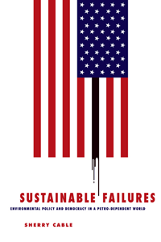

Examines environmental policy from a sociological perspective, showing how our petro-dependency causes unprecedented environmental damage and threatens our democracy
Examines environmental policy from a sociological perspective, showing how our petro-dependency causes unprecedented environmental damage and threatens our democracy


 Examines environmental policy from a sociological perspective, showing how our petro-dependency causes unprecedented environmental damage and threatens our democracy
Examines environmental policy from a sociological perspective, showing how our petro-dependency causes unprecedented environmental damage and threatens our democracy

|  |
Sustainable FailuresEnvironmental Policy and Democracy in a Petro-dependent WorldSherry Cablepaper EAN: 978-1-43990-900-3 (ISBN: 1-43990-900-8) |
"Sherry Cable offers an innovative and critical analysis of global environmental policy. Highlighting the geopolitical foundations of our dependence on petroleum, she eloquently delineates the structural constraints that continue to impede our transition to sustainable environmental policies. Weaving together extensive literature from sociology, political science, and history, Cable’s work provides poignant illustrations of our failed energy policy, ranging from local environmental injustices to global climate change. Sustainable Failures is a must read for those interested in the geopolitical underpinnings of our broken energy policy."
—Thomas E. Shriver, Department of Sociology, Oklahoma State University, Stillwater, OK
Environmental policies fail in conspicuous and egregious ways to sustain the natural resource base and protect citizens from production-generated risky exposures. In her engaging study, Sustainable Failures, Sherry Cable asks, why does environmental policy seem to be a contributing cause rather than a partial solution to environmental problems?
Melding a biophysical science perspective of environmental processes with sociological insights into human behavior, Cable examines the people, policies, and issues of petrochemical dependence and broader environment questions. She insists that our present policies around the manufacture and use of petroleum products violate rudimentary ecological principles—and do so in complicated ways.
Sustainable Failures is a blistering wake-up call to what is at stake not only regarding the failure of policy outcomes and grievous natural resource depletion and pollution, but also concerning democracy and ecological survival, and eventually, potentially, the existence of our species.
Excerpt available at www.temple.edu/tempress
"Sherry Cable’s Sustainable Failures is the most realistic, interdisciplinary, big picture analysis of unsustainable ‘petro-dependent’ policy that I have read. Presenting a mountain of evidence about ecosystems, U.S. and international environmental laws, political-economic relationships, and community case studies, she shows why current approaches are failing. Her ambitious and brave book reminds us that just because ‘nobody eats us’ doesn’t mean that we can afford to create policies that ignore fundamental ecological principlest."
—Stella M. Čapek, Department of Sociology/Anthropology, Hendrix College
"I have been waiting for this book for three decades. Cable looks into why we have had powerful laws that regulate specific impacts on high profile issues while topics tangentially related to our dependence on a petroleum-based economy fall into the 'don’t bother me now' category of our collective attention and action.... In addition to being an able researcher, Cable is a gifted storyteller.... she dedicates most of her work to a broad and deep 'what’s wrong with this picture' description of where we are and how we got here.... This book puts the blame for our mess right where it belongs—on us as a society."
—Sustainability
"Cable offers a sweeping analysis of how humans live outside their means, fostering a false duality between society and biosphere with decidedly unsustainable technological and petroleum energy dependence.... Written for a broad audience, the work deftly combines a jargon-free sociological lens on human behavior with biophysical science questions of sustainability. Summing Up: Recommended."
—Choice
"Cable, an experienced and thoughtful environmental sociologist, in her latest book takes on important and difficult issues surrounding the development, implementation, and especially efficacy of environmental policy....This short and accessible book....[i]s well organized, interesting and clearly written. In addition to the broader arguments that run through the book, there are many well-chosen examples of particular environmental problems, events, and legislation that keep the book grounded and engaged with issues that are likely familiar to most undergraduates.... [T]his work is nonetheless also worthy of being read by established scholars, since it presents analyses that are relevant to a variety of debates among researchers."
— Contemporary Sociology
"As Cable makes clear, her analysis...eschews a clear and distinctive break in modes of production between industrial and pre-industrial societies.... Cable justifies her unorthodox approach on the basis that she is interested in humanity's use of the biosphere in relation to how we acquire the resources and energy needed to stay alive, and how they are obtained, whether that be from machines or animal/human labor, and energy from wood, coal or oil.... [C]hapters of her book, particularly her analysis and the attention she pays to environmental racism, are important and refreshing."
— Journal of Sociology and Social Welfare
"In this well-researched and accessible volume on our environmental predicament, Sherry Cable asks: To what extent do environmental policies acknowledge ecological principles and enact principles of fairness and justice?… The book is rich in empirical detail, with numerous illustrative case studies and comprehensive inventories of the U.S. environmental policy regime."
— Social Forces
Table of Contents
PART I: Rationale for Environmental Policy
1. The Shape of Sustainable Environmental Policy
2. Modes of Human Subsistence, Environmental Impacts, and Environmental Policies
3. The Poisoning of the Biosphere: The
Petro-dependent Mode of Subsistence
Part II: The United States: Prototype Petro-dependent Society
4. Petro-dependent Environmental Policies
5. Violations of Ecological Principles: Resource Depletion and Pollution
6. Living in the State of Denial: Conflict and the Contamination of Workplaces, Communities, and Citizens
7. Broken Promises: Environmental Injustices
8. Petro-dependent Obstacles to Sustainable Policies: The Corporate
State and Its Institutional and Cultural Reflections
Part III: Environmental Policy in the Perto-dependent Empire
9. International Environmental Policymaking
10. Global Environmental Problems: Overpopulation, Peak Oil, and Climate Change
11. Sustaining Unsustainability: The Transnational Corporate State
Part IV: And So...
12. Once There Was a Planet in the Milky Way Galaxy
Appendix: Websites and Mission Statements: NGO Partners for the Global Plan of Action for the Protection of the Marine Environment from Land-Based Activitie
References
Index
Sherry Cable is Professor of Sociology and Faculty Fellow in the Tennessee Teaching & Learning Center at the University of Tennessee. She is the author (with Charles Cable) of Environmental Problems/Grassroots Solutions: The Politics of Grassroots Environmental Conflict.
Sociology
Nature and the Environment
Political Science and Public Policy
© 2015 Temple University. All Rights Reserved. This page: http://www.temple.edu/tempress/titles/2214_reg.html.